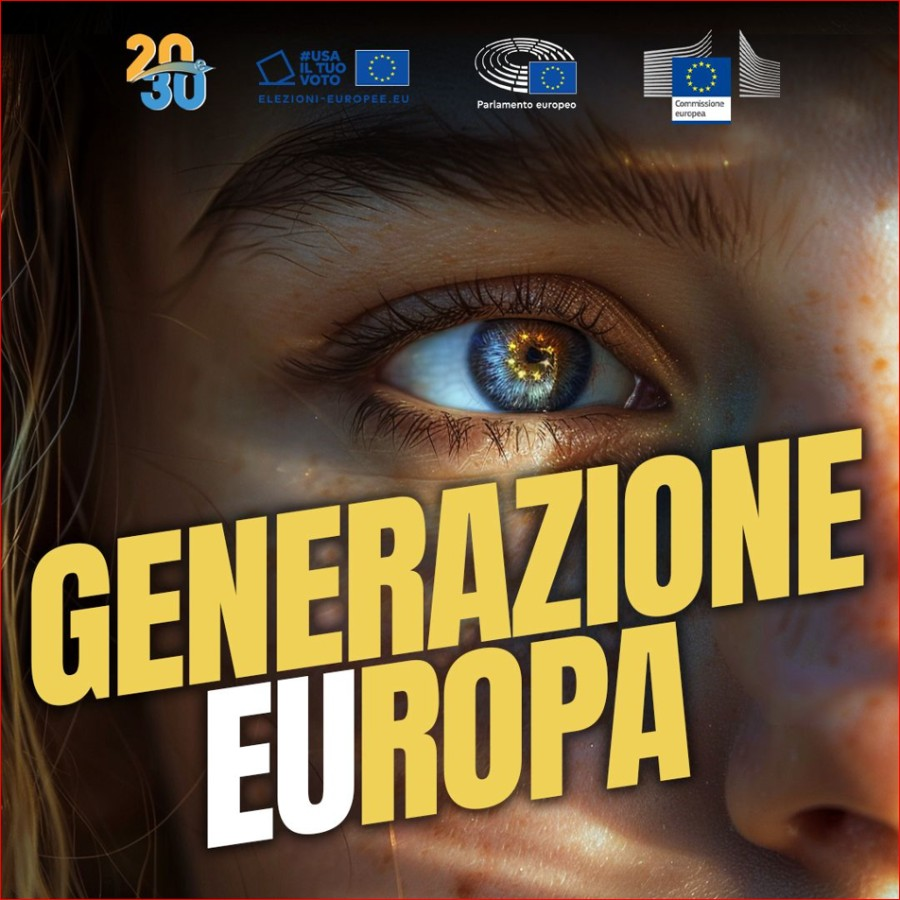

- Cliente
- Legal For Digital
- Periodo
- Da 01/23
- Il mio ruolo
- Montaggio, Distribuzione
Altri progetti

Generazione Europa
Il podcast di 20e30 in collaborazione con l’ufficio del parlamento europeo in Italia e la Rappresentanza della commissione europea con la media partnership di CnC Media.
Scopri →È il sesso, bellezza!
Il podcast dell’attrice e performer di burlesque Giulia di Quilio, dove affronta il tema del sesso e della sessualità abbattendo ogni tabù.
Scopri →Lavoraci Su
Il podcast di Annalisa Carrera alla scoperta del motivo per cui si fa il lavoro che si sta facendo.
Scopri →